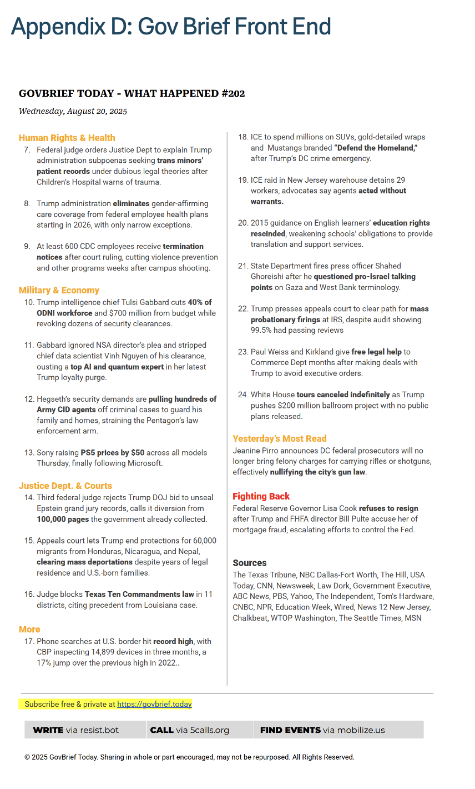
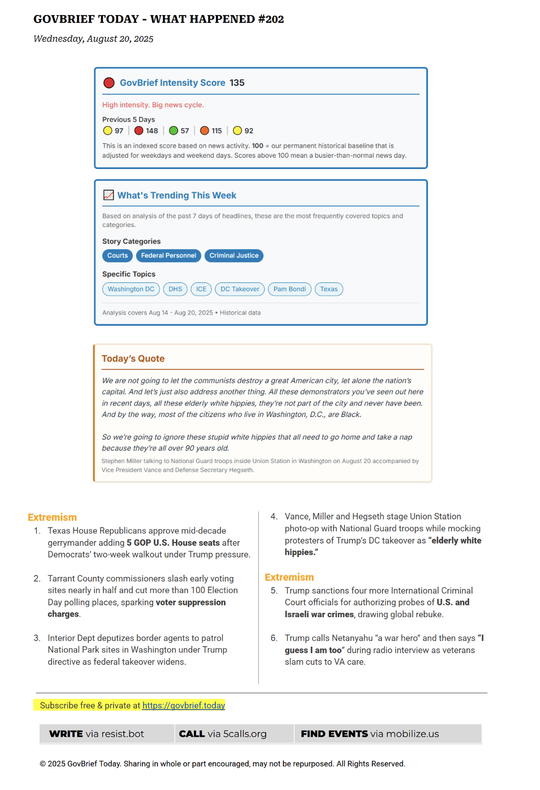
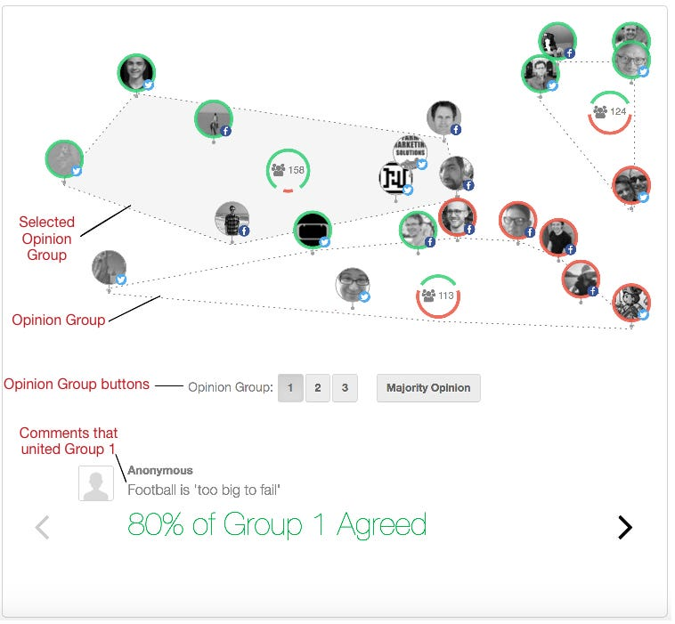
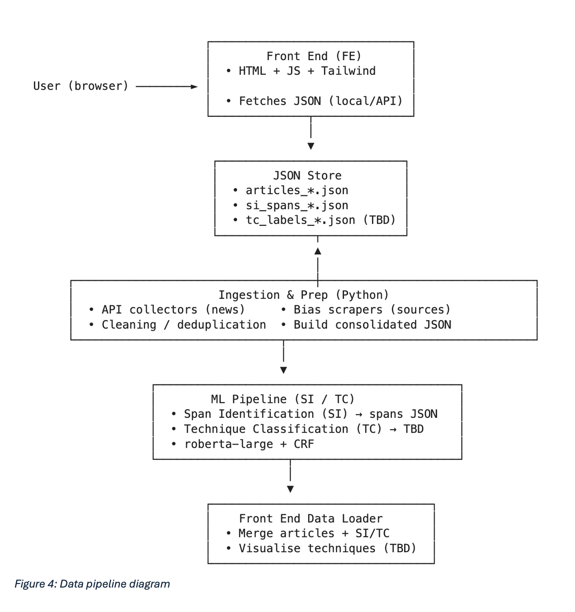
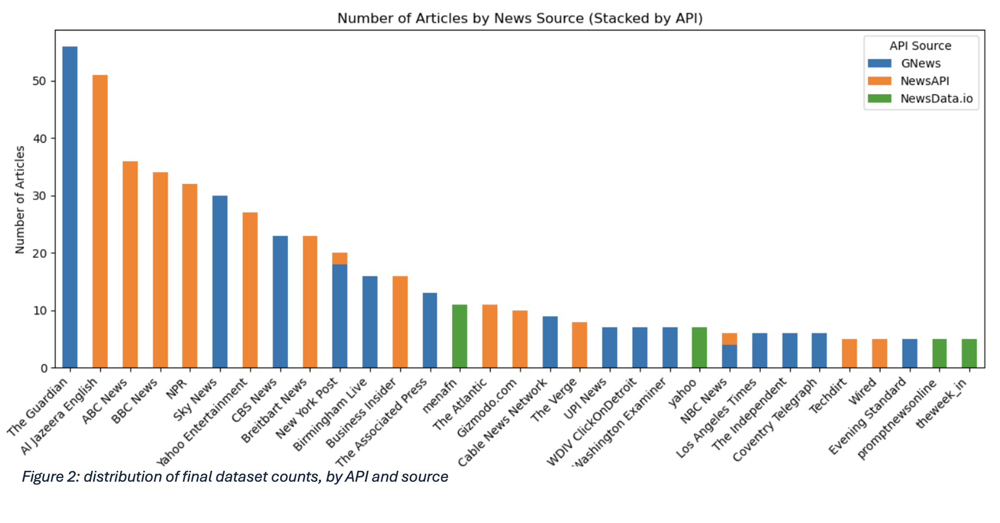
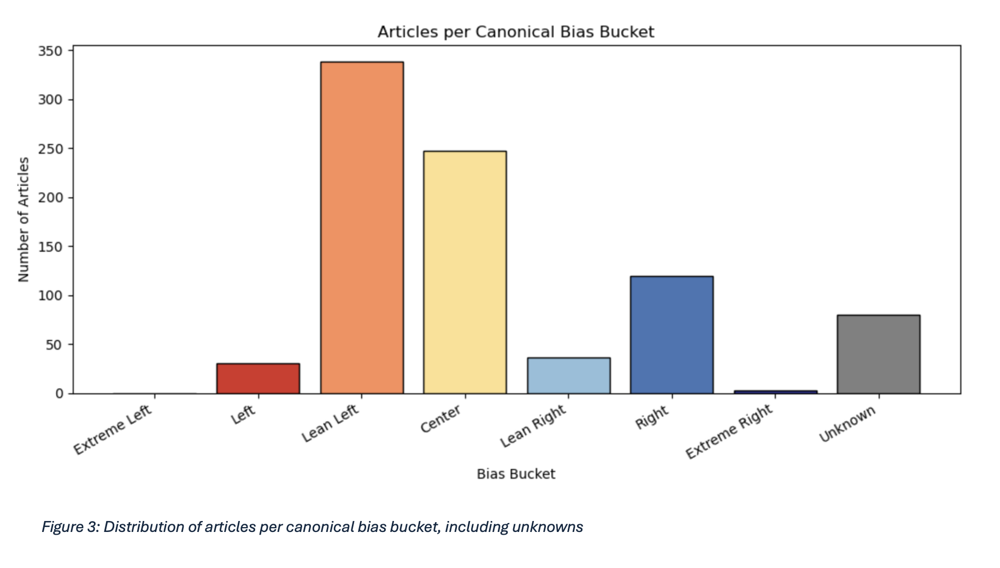
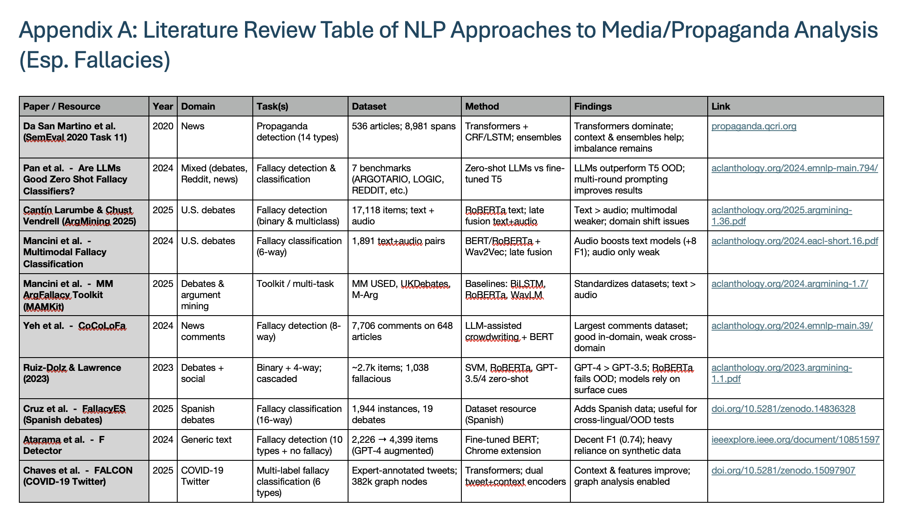
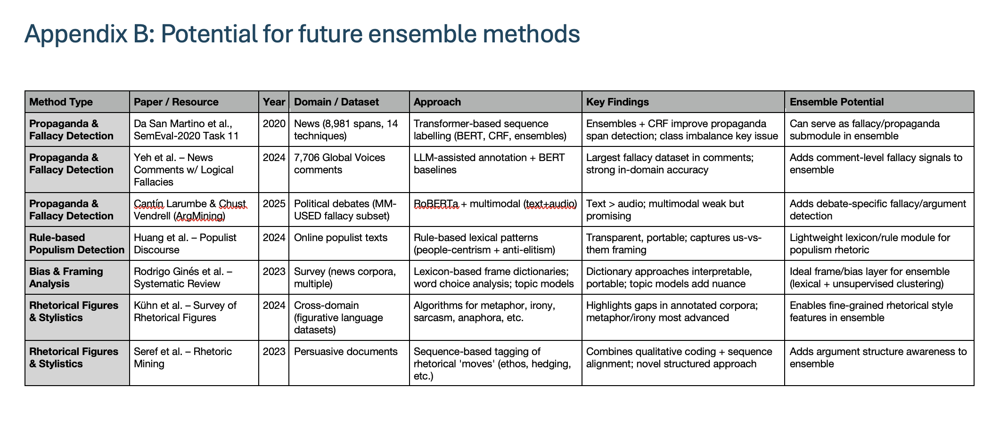
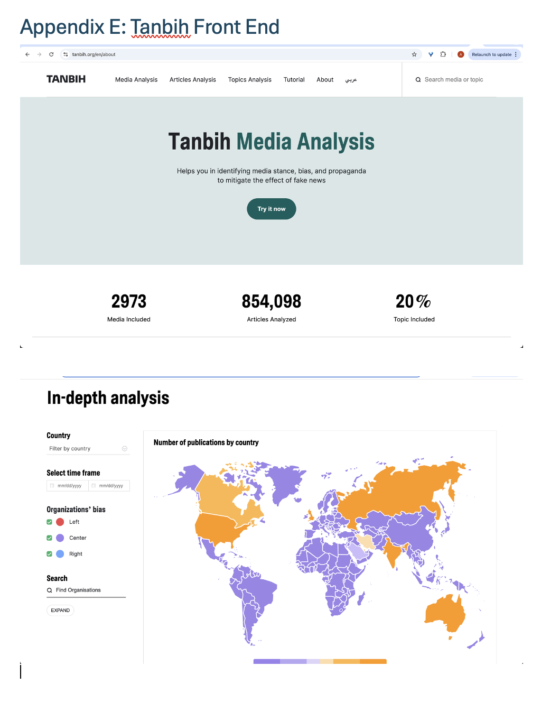

Scaffolding Possible Frameworks for Media Literacy: NLP, Sentiment Analysis and Propaganda Detection in Immigration Reporting
Background
This dissertation was submitted in partial fulfilment of an MSc in Data Science at the University of the West of England. It is included here as the direct intellectual precursor to the DIM project.
The motivating question was one I had been turning over for some time. Rhetorical features of language - logical fallacies, argumentative moves, persuasive techniques - have established names, definitions, and identifiable patterns. Such taxonomies exist across disciplines: philosophy, rhetoric, linguistics, pragma-dialectics. LLMs are, among other things, engines for large-scale pattern recognition in text. The question, then, was whether that taxonomy could be operationalised as a detection task - whether an LLM could be prompted to apply it reliably, and whether the resulting detections could give us quantifiable insight into the argumentative structure and rhetorical character of political discourse at scale.
The follow-on question was the one that interested me more: if you could do that reliably, could it form the basis of a platform that surfaces those techniques, explains them, and makes them visible - not to adjudicate truth, but to support deliberation by bridging the gap between arguing and reasoning, and finding the common ground between positions?
Abstract
Chapter 1 · Introduction
1.1 Background and Rationale
Public debate on immigration in the UK and US has become more identity-laden, affective, and fragmented since the mid-2010s. In parallel media ecosystems, how arguments are framed often matters as much as what is claimed (Suro, 2009; Conzo et al., 2021). Techniques such as fear appeals, scapegoating and loaded language can shape attitudes and policy preferences, yet existing platforms typically flag factual accuracy rather than surfacing rhetorical construction. This dissertation explores whether computational signals from propaganda technique detection can be revived from a 2020 benchmark and combined with sentiment and media-bias context to scaffold critical reading - supporting media literacy without prescribing conclusions.
The project concentrates on UK and US immigration reporting. It assembles a domain-specific dataset and applies an NLP and political bias-labelling pipeline that integrates (i) propaganda technique detection (SemEval-2020 Task 11), (ii) sentiment analysis (VADER, TextBlob), and (iii) source-level bias metadata (Ad Fontes, MBFC, AllSides, Ground News). These signals are planned for a lightweight interface; in the current prototype only sentiment is displayed. Propaganda spans/technique labels are shown via offline screenshots, not yet live overlays.
1.2 Problem Statement and Scope
Readers lack tools that make rhetorical techniques visible at the point of consumption. Research tools exist, but they are rarely integrated with sentiment and bias context, or released to the public, and they are not typically oriented toward non-prescriptive media-literacy support.
This is a feasibility-focused prototype. The work:
- Builds a reproducible dataset of 853 UK/US immigration articles (via GNews, NewsAPI, and NewsData.io), and enriches it with bias ratings
- Demonstrates inference-time revival of the SemEval-2020 span-detection approach in a 2025 environment
- Designs a front-end concept and partial prototype (sentiment/bias only); propaganda spans/technique labels not yet integrated (illustrated via screenshots in appendices)
It does not aim to re-train large models, run user studies, or claim causal impact on beliefs. Given compute constraints, propaganda span inference is run on a balanced sample of 70 articles to evidence technical viability and inform design and future work.
1.3 Aims and Objectives
Aim: To prototype and evaluate a non-prescriptive media-analysis workflow that surfaces rhetorical techniques, sentiment, and source bias in UK/US immigration reporting to support critical media literacy.
- O1. Assemble a legally compliant, reproducible immigration-news dataset with UK/US coverage and mapped source-bias metadata.
- O2. Operationalise the SemEval-2020 propaganda span-detection pipeline in a 2025 toolchain and run inference on a balanced sample.
- O3. Define a schema to combine propaganda spans with sentiment and bias for future user-facing display; in this submission, spans remain offline outputs and are not yet rendered in the UI.
- O4. Prototype a front-end that sketches toggles; implemented for sentiment/bias only. Spans/technique labels are planned for demonstration in the viva.
- O5. Evaluate feasibility: (a) data readiness, (b) technical execution of span detection, (c) interpretability of technique distributions by bias bucket, and (d) design heuristics for transparency and multi-perspectivity.
1.4 Research Questions
- RQ0 (data feasibility): Can a legally compliant, reproducible UK/US immigration dataset be assembled with adequate topical/ideological coverage and pre-processing quality?
- RQ1 (technical feasibility): Can the SemEval-2020 approach be executed in a 2025 environment to identify technique-level spans on contemporary articles?
- RQ2 (exploratory analysis; conditional on RQ1): Do relative frequencies of the 14 techniques differ across canonical bias buckets (Left/Lean Left/Center/Lean Right/Right)?
- RQ3 (design integration; conditional on RQ1–2): Can ML outputs be combined with sentiment and media-bias metadata in a UI that scaffolds critical thinking (transparency, multi-perspectivity, non-prescriptive cues)?
1.5 Contributions
- Data/engineering: A modular, containerised pipeline and dataset of 853 articles with linked bias metadata for 267 sources (91% coverage), plus sentiment enrichment.
- Method revival: A practical recipe for reviving a 2020 span-detection stack in 2025, documenting brittleness and pinning strategies; inference on a 70-article balanced sample.
- Design prototype: A UI concept with working sentiment/bias panels. Propaganda span/technique overlays are deferred (illustrated in appendices only).
- Release: A reusable media-bias mapping table and code to support replication and extension.
Chapter 2 · Research
2.1 Polarisation in Debate and Culture
Since the mid-2010s, UK/US polarisation has centred less on economics than on group-identity divides around immigration, nation, race and values, accelerated by Brexit and Trump (Kaufmann, 2018; Norris & Inglehart, 2019). Party sorting and new opinion identities (e.g., Leave/Remain) hardened negative sentiment; in the UK, Brexit identity rivals party ID (Hobolt et al., 2021; Duffy et al., 2019). Parallel media ecosystems and social platforms amplify echo chambers and misinformation, fostering "separate realities" and distrust (Kleinfeld, 2023; Pew Research Center, 2023). The US shows greater democratic stress (election denial; 6 January) as polarisation meets norm-breaking (Kleinfeld, 2023; Pengelly, 2024). The UK's divide, more Brexit-focused, cooled somewhat post-2019 but remains culturally salient (Duffy et al., 2019; More in Common, 2025). Overall, hardened sentiment, media fragmentation, and rhetoric entrench adversarial politics across both contexts.
2.2 Language in Immigration Reporting
Post-2015 work shows UK/US media frequently frame immigration with negative, polarising language: othering, stereotypes, and crisis metaphors dominate; immigrant voices are under-represented (Eberl et al., 2018; Fuller, 2024). UK coverage sustains "waves/floods" metaphors that dehumanise and legitimise exclusion (Gonçalves, 2023; Baker et al., 2008).
Loaded and dehumanising labels persist: e.g., a 2015 UK Sun column calling migrants "cockroaches" drew UN condemnation (Stop Funding Hate & Ethical Consumer, 2022). In the US, Trump-era terms like "infest/animals" were normalised and amplified (Vasquez, 2021). Such language correlates with hostility and moral panic (Conzo et al., 2021) and often rides on fallacies - scapegoating, slippery slope, and false cause (Stop Funding Hate & Ethical Consumer, 2022; Gonçalves & David, 2024).
Terminology is a central battleground: AP's 2013 shift away from "illegal immigrant" reduced support for restrictive policies, evidencing lexical effects on opinion; the partisan divide in word choice endures (Djourelova, 2023). UK tabloids continue subtle threat/crisis frames (Stop Funding Hate & Ethical Consumer, 2022); US right-leaning outlets emphasise "invasion," while left-leaning outlets counter with humanitarian frames (Gonçalves & David, 2024). Thus, crisis metaphors and othering persist, alongside heightened polarisation, mainstreamed fallacy-driven rhetoric, and clear links between vocabulary and attitudes (Suro, 2009; Conzo et al., 2021).
2.3 Fallacy Detection in Political Media
Automated fallacy/propaganda detection has gained traction as a way to surface persuasive but logically weak or manipulative strategies at scale, with the aim of supporting moderation, improving debate quality, and scaffolding critical thinking (Larumbe & Vendrell, 2025).
The most widely used benchmark for propaganda-style argumentation in news is SemEval-2020 Task 11 (Da San Martino et al., 2020), which contains 536 news articles, 8,981 annotated text spans, and 14 propaganda technique categories. The shared task showed that propaganda detection is best approached as a two-step process: first identifying where the potentially manipulative span is, and then classifying the rhetorical technique. The top-performing systems relied on Transformer-CRF models for span identification and Transformer-based classifiers for categorisation, with ensembles and "silver" automatically labelled data used to address class imbalance. This established a baseline for propaganda detection in mainstream news reporting, and forms the backbone of one layer of the artefact proposed here.
Span Identification (SI) and Technique Classification (TC). In the SemEval-2020 Task 11 setup, propaganda detection is a two-step pipeline. Span Identification (SI) treats an article as a sequence and locates contiguous text spans likely to contain propaganda. Technique Classification (TC) then assigns a rhetorical technique label (from 14 categories such as Loaded Language, Name Calling/Labeling, Flag-Waving, Appeal to Authority, etc.) to each detected span. SI answers "where is the persuasive/propaganda material?"; TC answers "what kind is it?" This decomposition improves precision and interpretability relative to single-step sentence classifiers, and it aligns naturally with UI designs that can highlight spans and explain techniques.
Capturing everyday online discourse, the CoCoLoFa dataset contributes 7.7k annotated news comments labelled for eight common fallacy types. Yeh et al. (2024) found that while models trained on CoCoLoFa achieve strong results within the dataset, performance drops significantly when applied cross-domain. This suggests that fallacy detection benefits from adaptive pretraining and careful label alignment when moving between domains.
US presidential debates provide multimodal tests: late-fusion text+audio improves up to +8 F1, especially for affective categories (Mancini et al., 2024), but text-only RoBERTa can beat multimodal under resource limits (Larumbe & Vendrell, 2025). Some systems boost performance via synthetic data (e.g., F-Detector), though altered label sets hinder comparability (Atarama, Pereira & Salas, 2024).
2.3.1 Methods: From Rules to Transformers (and LLMs)
Approaches span rule-based to deep learning. Rule-based methods are transparent and portable for targeted rhetoric with low data needs (Tao et al., 2024). Transformer fine-tuning dominates span/sentence detection across news, comments, and debates (Da San Martino et al., 2020; Mancini et al., 2024; Larumbe & Vendrell, 2025). LLMs are emerging few/zero-shot fallacy detectors and can outperform fine-tuned models out-of-domain (Pan et al., 2024). Framing/bias analysis via lexicons, embedding clustering, and topic models complements fallacy detection by quantifying how issues are framed alongside reasoning failures.
2.3.2 Tools and Exemplars
Prototype tools highlight practical possibilities. The Propaganda Research/Analysis line (e.g., PRTA, 2022) demonstrates span-level detection and article summaries. Browser-based overlays highlight loaded language or partisan cues in situ. These suggest a UX pattern for future platforms: lightweight, on-demand annotations that support rather than overwhelm.
2.4 Designing for Deliberation and User Needs
Design choices in online platforms shape how people encounter and interpret political information. Engagement-optimised feeds systematically privilege emotionally charged, out-group-hostile content (Milli et al., 2023; Rose-Stockwell, 2018), while recommender systems risk narrowing exposure (Pariser, 2011). Although some studies dispute the scale of filter bubbles (Flaxman, Goel and Rao, 2016), a lack of transparency around ranking can undermine deliberation. Experiments during the 2020 U.S. election show that interventions such as chronological feeds or exposure diversification can significantly shift what people see, even if attitudes change more slowly (Nyhan et al., 2023).
Research highlights several levers for embedding multi-perspectivity in design. Deliberative interfaces such as Pol.is cluster participants by viewpoint and surface consensus statements across divides (Horton, 2018). Argument-mapping tools like Kialo (2025) and Deliberatorium (Klein, 2011) reduce redundancy and separate claims from identities, supporting clarity and critical reasoning (Gürkan et al., 2010). Behavioural nudges such as accuracy prompts improve truth discernment (Pennycook and Rand, 2022), while prebunking videos can inoculate users against misinformation (Roozenbeek, van der Linden and Nygren, 2022).
At the same time, poorly framed interventions risk backfiring. Bail et al. (2018) found that exposing Republicans to liberal tweets increased partisan entrenchment. Such findings underline the importance of contextual framing, layered explanations, and psychologically safe prompts. Overall, the literature suggests an ensemble approach - combining propaganda detection, sentiment and bias overlays, and deliberative, interactive features - offers the most promise for scaffolding critical thinking without prescribing conclusions.
2.5 Emerging Platforms Supporting Media Literacy
Recent platforms operationalise these ideas. GovBrief offers structured daily political digests with indicators to reduce overload without partisan feeds (GovBrief, 2025). Tanbih analyses ~million-scale articles to visualise stance, bias, and propaganda via interactive dashboards. Pol.is, used in Taiwan's vTaiwan, clusters viewpoints and surfaces cross-group consensus while preserving diversity (Horton, 2018).
These embody complementary logics: GovBrief = curatorial simplification; Tanbih = algorithmic pluralisation; Pol.is = deliberative consensus-building. Together, they broaden epistemic horizons and support reflective engagement. The present artefact adopts these principles by combining automated propaganda detection with sentiment/bias overlays in a transparent, non-prescriptive interface designed to scaffold - rather than dictate - critical reading.



Chapter 3 · Proposed Artefact
This project proposes the development of a prototype artefact - a media analysis interface designed to represent how a platform could be designed to support critical engagement with political news by combining automated NLP pipelines with interactive visualisations. The artefact is not conceived as a finished product but as a research-driven proof-of-concept, demonstrating how recent advances in computational propaganda detection, media bias attribution, and UX design might be integrated into a single system. In the current build, only sentiment and bias are surfaced in the UI; propaganda spans and technique labels were proven but not integrated.
The purpose of the artefact is twofold. First, it seeks to explore the technical feasibility of applying fallacy and propaganda detection models, trained on benchmark corpora such as SemEval-2020 Task 11, to a novel dataset of 853 immigration-related news articles. Second, it aims to experiment with user-facing representations of sentiment, rhetorical and bias analysis to test the technical feasibility and potential design of a platform capable of fostering critical thinking in media consumption, helping users recognise not only what is being argued, but how arguments are constructed and framed.
3.1 System Architecture
The artefact consists of a data ingestion pipeline, an NLP enrichment layer (sentiment) and an offline SI layer (applied to a 70-article sample). The ingestion pipeline collects news articles from multiple APIs and the dataset is then enriched with bias metadata from external datasets that uses a separate media bias dataset covering each of the unique sources found within the article dataset. The NLP enrichment layer applies sentiment analysis (VADER, TextBlob), and the ML layer produces SI outputs offline (via a pretrained propaganda/fallacy detection model designed by Da San Martino et al).

3.2 Design Principles
Chapter 4 · Technical and Design Methodology
4.1 Dataset Creation
To examine how immigration discourse varies across media ecosystems, a scalable pipeline was developed using three APIs: GNews, NewsAPI, and NewsData.io. Relying on a single provider risked skew - early tests with GNews, for instance, returned a disproportionate number of Guardian articles. Combining APIs with different strengths captured both mainstream and regional outlets across the UK and US.
Queries centred on nine terms reflecting political framings around immigration: immigration, migrant, refugee, asylum, deportation, border crisis, channel crossings, mass migration, and illegal alien. Where possible, country filters restricted results to UK/US sources. GNews offered rapid responses but strict rate limits; NewsAPI provided broad mainstream coverage but limited country filtering on its free endpoint; and NewsData.io delivered greater recall, including regional outlets, with pagination into deeper result pages.
Bias metadata was mapped for each outlet using Ad Fontes, Media Bias/Fact Check (MBFC), AllSides, and Ground News. Using multiple providers allowed inconsistencies to be compared and supported more nuanced analysis. In total, the bias dataset covers 267 unique sources, with bias information retrieved for 243 (91%). The dataset is skewed toward centre- and left-leaning outlets, reflecting the greater availability of open-access content in these categories and right-leaning paywalls - documented transparently as a limitation.

The final dataset bias distribution:
| Bias Bucket | Count |
|---|---|
| Extreme Left | 0 |
| Left | 30 |
| Lean Left | 338 |
| Center | 247 |
| Lean Right | 36 |
| Right | 120 |
| Extreme Right | 3 |
| Unknown | 80 |

4.2 Data Cleaning
Deduplication was performed using URL matching and near-duplicate title checks. Query drift was mitigated by excluding off-topic hits via spot checks. A sentiment sanity check was applied: if both TextBlob and VADER returned neutral on non-empty text, the article was flagged as a potential lexicon blind spot for manual inspection.
4.3 Methods Applied
4.3.1 Data Ingestion and Enrichment
The pipeline collected, parsed, and enriched articles via the three APIs; applied sentiment (VADER, TextBlob) and NER/SVO (spaCy); and matched outlets to bias ratings from Ad Fontes, MBFC, AllSides, and Ground News, producing 853 enriched articles with canonical bias mapping across 267 sources.
4.3.2 Machine Learning Application
Propaganda detection was applied to a balanced sample of 70 articles using Da San Martino et al.'s (2020) SemEval Task 11 span-identification model. The architecture used RoBERTa-large with a BiLSTM+CRF tagging head, decoded with Viterbi.
For reproducibility, the environment was containerised (Python 3.7) with pinned 2020-era dependencies (Transformers 2.3.0; Torch 1.7.1 CPU; Torchvision 0.8.2; NumPy 1.16.x; scikit-learn 0.21.x; SentencePiece 0.1.85). Exact replication proved more reliable than code upgrades. Articles were converted to canonical TSV inputs; spans were created successfully, but techniques not yet run and merged back into the dataset.
4.3.3 Integration Layer
- Span highlights: Planned - propaganda spans mapped to article text with technique labels.
- Sentiment overlay: Polarity and subjectivity scores displayed per article.
- Bias context: Source-level bias and reliability indicators added from the external dataset.
- Transparency fields: Provenance data (source, date, API, query term) retained in the schema.
4.3.4 Front-End Artefact Creation
A lightweight interface was developed to enable interaction with the enriched dataset. Sentiment and bias panels were implemented; propaganda span highlighting and technique tooltips are not implemented (illustrated via screenshots only). The deployed prototype is viewable at abrown1564.github.io/truthspace.
4.3.5 Evaluation Setup
- RQ0 (dataset feasibility): Assess coverage, ideological spread, rhetoric readiness, and reproducibility.
- RQ1 (feasibility of SemEval model): Test whether propaganda span detection runs successfully and yields plausible spans on the dataset.
- RQ2 (technique distributions by bias): Compute technique frequencies normalised by tokens and by spans-per-article, aggregated within canonical bias buckets.
- RQ3 (integration/design): Conduct a heuristic review of the UI for transparency, multi-perspectivity, and non-prescriptive design.
4.3.6 Ethics, Data and Reproducibility
All data were collected via public APIs, ensuring compliance with provider terms. No copyrighted full-text articles are redistributed; only metadata, derived features, and analysis outputs are retained and shared. Key ethical considerations included:
- Data provenance and consent: Only publicly accessible news sources and bias ratings were used. No private user data, comments, or social-media profiles were collected.
- Bias and representation: The dataset's skew toward centre- and left-leaning outlets is documented transparently and treated as a limitation rather than silently ignored.
- Epistemic responsibility: The project surfaces signals of propaganda and bias but deliberately avoids prescriptive judgments, reflecting an ethical commitment to scaffolding critical engagement without dictating conclusions.
- Environmental and computational ethics: Given limited hardware, inference was restricted to a small balanced sample (70 articles), balancing feasibility with a responsible approach to compute use.
- Pedagogical ethics: The design intentionally avoids shaming or adversarial cues that could entrench beliefs. Instead, the prototype foregrounds multi-perspectivity and transparency to encourage reflective engagement.
Chapter 5 · Evaluation
5.1 Evaluation of Artefact
The model output sensible spans for the 70 articles input, identifying spans of text containing assumed loaded/emotive language (pre-technique classification). Technique distributions across bias buckets were unfortunately not able to be interpreted fully. Despite substantial progress with Span Identification (SI), the Technique Classification (TC) module could not be applied to the dataset within the project timeline. The primary limitation was computational: running SI across the full set of over 800 articles proved infeasible within the available environment - prediction runs on single chunks of ~15k tokens often took multiple hours, and attempts to parallelise across chunks repeatedly led to memory exhaustion or killed processes.
Even with optimisations such as reducing batch size, execution remained prohibitively slow, forcing a pivot to a much smaller, manually sampled dataset of 70 articles. This allowed SI to be demonstrated, but there was insufficient time to build and debug the additional TC pipeline on top of this data.
The front-end prototype partially succeeded in scaffolding critical thinking. A heuristic review indicated that the sentiment and bias panels communicated transparency and multi-perspectivity effectively, but propaganda span and technique overlays were not implemented, limiting the prototype's scope.
5.2 Limitations
5.2.1 Technical Constraints
Running a 2020-era propaganda detection model in a 2025 environment required careful replication of the original dependency stack. Even with containerisation, the pipeline proved brittle and prone to failure if libraries were not pinned to exact versions. The most significant challenge was compute. Running span identification with RoBERTa-large + CRF on CPU within a local Docker environment (~8–12GB RAM), each evaluation step took around 4–5 seconds at batch size 1. A single chunk of ~3,000 examples required 6–10 hours to process. Scaling to the full dataset of over 800 articles would have taken an estimated 150+ hours (~two weeks). The input was therefore reduced to a balanced sample of 70 articles.
5.2.2 Data Constraints
The dataset was skewed toward centre- and left-leaning outlets, reflecting the greater availability of open-access content in these categories, while right-leaning coverage was frequently paywalled. The scraper also pulled irrelevant articles due to polysemous terms such as border, as well as unavoidable keyword collisions like asylum (e.g., Batman's Arkham Asylum). Bias attribution added further complexity: The Guardian was categorised as "Center" by Ground News but "Left-Center" by MBFC.
5.2.3 Methodological Constraints
The small sample size of 70 articles means conclusions about propaganda technique distributions must be treated as exploratory rather than definitive. Because the SemEval-2020 model was trained on general news, domain transfer to immigration reporting may have reduced accuracy, particularly for subtler or domain-specific framings. No ground-truth re-annotation was conducted, meaning the model's predictions could not be validated within this niche domain.
Chapter 6 · Conclusion
6.1 Summary of Project
This project set out to test whether propaganda detection methods from SemEval-2020 could be revived in 2025 and applied to a domain-specific dataset on UK/US immigration reporting. Despite the brittleness of legacy dependencies, the model was successfully deployed within a Dockerised environment, and a dataset of 853 articles was collected and enriched with sentiment and media bias metadata. The prototype focused on feasibility rather than completeness, demonstrating the potential of combining computational methods with design principles aimed at transparency, multi-perspectivity, and non-prescriptive support for media literacy.
6.2 Summary of Results
- RQ0 (dataset feasibility) and RQ1 (SI feasibility) were achieved.
- RQ2 (technique distributions by bias) could not be pursued because TC was not applied to the immigration dataset.
- RQ3 (design integration) was demonstrated conceptually; integration of SI/TC outputs remains future work.
6.3 Discussion of Aims
The artefact contributes both technically and conceptually. Technically, it demonstrates a modular, reproducible architecture with partial integration (sentiment/bias) and offline SI outputs. The media bias dataset containing the 267 individually labelled news sources will also be released publicly on GitHub. Conceptually, the project contributes to debates on how online platforms might be designed differently: shifting away from binary fact-checking toward tools that make rhetorical and persuasive structures visible, supporting critical literacy without prescribing conclusions.
6.4 Future Work
6.4.1 Data Collection and Management
- Expand keyword scraping to capture a broader range of framings (e.g., shorthand terms such as "illegals" may retrieve more right-leaning sources)
- Oversample from right-wing outlets or apply weighting strategies to counterbalance ideological skew
- Ground-truth re-annotation of a subset of articles to benchmark model reliability
- Store and manage the dataset in a lightweight SQL database for easier updates and consistency checks
6.4.2 Modelling and Analytical Enhancements
- Develop ensemble methods combining propaganda detection with framing analysis and argumentative structure mining
- Introduce topic clustering techniques, grouping articles that report on the same events or themes
- Integrate large language models for article summarisation, producing concise and neutral overviews
6.4.3 Design and User Support
- Include prebunking cues: when a slippery slope fallacy is flagged, highlight that such arguments often rely on exaggerated consequences
- Integrate the open-source pol.is codebase to enable structured, respectful, visual-first public debate around the analysed articles
- Shift from a passive annotation tool toward an interactive platform that fosters constructive dialogue
References
Ad Fontes Media (2021) How We Rate the News. Available at: https://adfontesmedia.com/how-we-rate/
AllSides (2024) How We Rate Media Bias. Available at: https://www.allsides.com/media-bias/media-bias-ratings
Atarama, D., Pereira, D. and Salas, C. (2024) 'F-Detector: Design of a solution based on machine learning to detect logical fallacies in digital texts', Proceedings of ISCMI 2024. doi:10.1109/ISCMI63661.2024.10851597.
Bail, C.A. et al. (2018) 'Exposure to opposing views on social media can increase political polarization', PNAS, 115(37), pp. 9216–9221. doi:10.1073/pnas.1804840115.
Chaves, M., Cabrio, E. and Villata, S. (2025) 'FALCON: A multi-label graph-based dataset for fallacy classification in the COVID-19 infodemic', Proceedings of SAC 2025. doi:10.1145/3672608.3707913.
Conzo, P. et al. (2021) 'Negative media portrayals of immigrants increase ingroup favoritism and hostile physiological and emotional reactions', Scientific Reports, 11(1), article 16407. doi:10.1038/s41598-021-95800-2.
Da San Martino, G. et al. (2020) 'SemEval-2020 Task 11: Detection of Propaganda Techniques in News Articles', Proceedings of the Fourteenth Workshop on Semantic Evaluation. doi:10.18653/v1/2020.semeval-1.186.
Diakopoulos, N. (2019) Automating the news: How algorithms are rewriting the media. Cambridge, MA: Harvard University Press.
Djourelova, M. (2023) 'Persuasion through slanted language: Evidence from the media coverage of immigration', American Economic Review, 113(3), pp. 800–835. doi:10.1257/aer.20211537.
Duffy, B. et al. (2019) Divided Britain? Polarisation and fragmentation trends in the UK. London: The Policy Institute, King's College London.
Eberl, J.-M. et al. (2018) 'The European media discourse on immigration and its effects: a literature review', Annals of the International Communication Association, 42(3), pp. 207–223.
Flaxman, S., Goel, S. and Rao, J.M. (2016) 'Filter bubbles, echo chambers, and online news consumption', Public Opinion Quarterly, 80(S1), pp. 298–320.
Fuller, J.M. (2024) 'Media discourses of migration', Language and Linguistics Compass, 18(4), Article e12526.
Gonçalves, I. (2023) 'Promoting hate speech by dehumanizing metaphors of immigration', Journalism Practice, 18(2), pp. 265–282.
Gonçalves, I. and David, Y. (2024) 'Threats, victims, or heroes? Media frames about migration in the United Kingdom and Brazil', International Communication Gazette, 87(3), pp. 217–237.
Ground News (2025) Media Bias Ratings. Available at: https://ground.news/media-bias
Gürkan, A. et al. (2010) 'Mediating debate through online large-scale argumentation', Information Sciences, 180(19), pp. 3686–3702.
Helberger, N., Karppinen, K. and D'Acunto, L. (2018) 'Exposure diversity as a design principle for recommender systems', Information, Communication & Society, 21(2), pp. 191–207.
Hobolt, S.B., Leeper, T.J. and Tilley, J. (2021) 'Divided by the vote: Affective polarization in the wake of the Brexit referendum', British Journal of Political Science, 51(4), pp. 1476–1493.
Horton, C. (2018) 'The simple but ingenious system Taiwan uses to crowdsource its laws', MIT Technology Review, 21 August.
Kaufmann, E. (2018) Whiteshift: Populism, immigration and the future of white majorities. London: Allen Lane.
Klein, M. (2011) 'How large-scale argumentation systems can help address global collective action problems', 2011 International Conference on Collaboration Technologies and Systems.
Kleinfeld, R. (2023) Polarization, democracy, and political violence in the United States. Washington, DC: Carnegie Endowment for International Peace.
Larumbe, E. and Vendrell, A. (2025) 'Argumentative fallacy detection in political debates', Proceedings of ArgMining 2025. doi:10.18653/v1/2025.argmining-1.36.
Mancini, E., Ruggeri, F. and Torroni, P. (2024) 'Multimodal fallacy classification in political debates', Proceedings of EACL 2024. doi:10.18653/v1/2024.eacl-short.16.
Media Bias/Fact Check (2025) Updated Methodology. Available at: https://mediabiasfactcheck.com/methodology/
Milli, S. et al. (2023) 'Engagement, user satisfaction, and the amplification of divisive content on social media', arXiv:2305.16941.
More in Common (2025) Shattered Britain. London: More in Common UK.
Norris, P. and Inglehart, R. (2019) Cultural Backlash: Trump, Brexit, and Authoritarian Populism. Cambridge: Cambridge University Press.
Nyhan, B. et al. (2023) 'Like-minded sources on Facebook are prevalent but not polarizing', Nature, 620, pp. 137–144.
Pan, F. et al. (2024) 'Are LLMs Good Zero-Shot Fallacy Classifiers?', Proceedings of EMNLP 2024. doi:10.18653/v1/2024.emnlp-main.794.
Pariser, E. (2011) The filter bubble: What the Internet is hiding from you. New York: Penguin Press.
Pennycook, G. and Rand, D.G. (2022) 'Accuracy prompts are a replicable and generalizable approach for reducing the spread of misinformation', Nature Communications, 13, 2333.
Pew Research Center (2023) Americans' Dismal Views of the Nation's Politics. Washington, DC.
Rodrigo-Ginés, F.-J., Carrillo-de-Albornoz, J. and Plaza, L. (2024) 'A systematic review on media bias detection', Expert Systems with Applications, 237, 121641.
Roozenbeek, J. et al. (2022) 'Psychological inoculation improves resilience against misinformation on social media', Science Advances, 8(34), eabo6254.
Rose-Stockwell, T. (2018) 'How to design better social media', Medium, 13 April.
Stop Funding Hate and Ethical Consumer (2022) Addressing subtle forms of hate in UK media coverage of migration. London.
Suro, R. (2009) 'Promoting Misconceptions: News Media Coverage of Immigration'. Los Angeles, CA: USC.
Tao, Y. et al. (2024) 'Measuring Chinese online populist discourse', Chinese Journal of Communication, 18(2), pp. 121–141.
Vasquez, C. (2021) Brown Moral Panic: Racism in the Trump Era [Master's thesis, UT Rio Grande Valley].
Yeh, M.-H., Wan, R. and Huang, T.-H. (2024) 'CoCoLoFa: A dataset of news comments with common logical fallacies written by LLM-assisted crowds', Proceedings of EMNLP 2024. doi:10.18653/v1/2024.emnlp-main.39.
Appendices
Appendix A: Literature Review Table of NLP Approaches

Appendix B: Potential for Future Ensemble Methods

Appendix C: Front-End Prototype
The deployed prototype - sentiment panel, bias panel, and article view - is available at: abrown1564.github.io/truthspace.
Appendix D: Platform Screenshots - GovBrief and Tanbih
